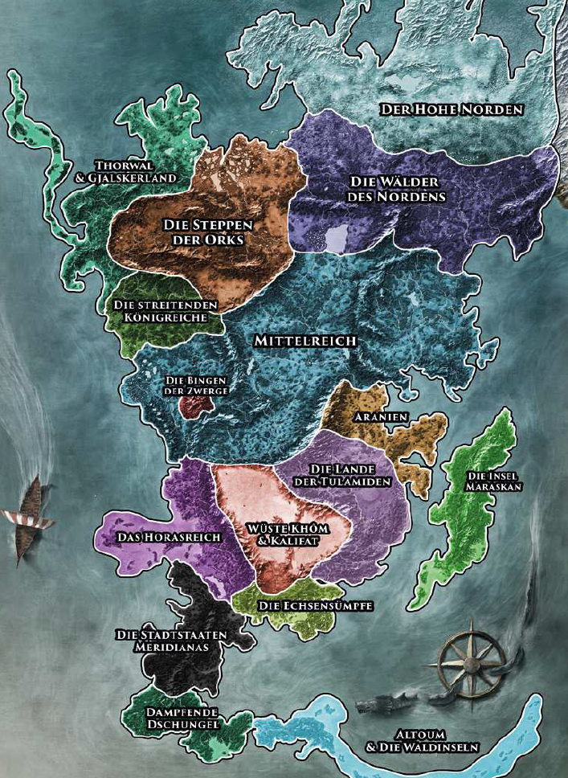

Aventurien heißt der Kontinent. Er liegt auf der Welt Dere, die entfernt mit der unserer heimatlichen Erde vergleichbar ist. Wir wollen allerdings nicht genau festlegen, ob Dere ebenfalls die Gestalt einer Kugel hat. Viele ihrer Bewohner sind davon überzeugt, aber ebenso gut könnte die Welt Gelehrten zufolge eine Scheibe sein, eine Halbkugel oder sogar die Form eines Rings haben. Dere besitzt eine Sonne, weiterhin als Praiosscheibe (oder: Praiosauge) bezeichnet, und einen Mond, der häufig Madamal genannt wird. Es ist eine fantastische Welt voller Götterwirken, Zauberei und gefährlicher Kreaturen - und Aventurien ist ein Land, das strahlende Heldinnen und Helden braucht, um nicht in Dunkelheit zu versinken.
Dere besitzt neben Aventurien drei weitere bekannte Landmassen. Von Aventurien aus muss man Richtung Westen über das Meer der Sieben Winde fahren, um irgendwann in das Güldenland zu gelangen, welches von seinen Bewohnern auch Myranor genannt wird. Durchquert man geradewegs das Südmeer, erreicht man nach langer und gefahrvoller Fahrt das riesige Uthuria, das auch Land der 12.000 Götter geheißen wird. Im Osten liegt jenseits des Perlenmeers das Riesland, das die Tulamiden Rakshazar nennen. Es granzt im äußersten Nordosten an Aventurien, die beiden Kontinente trennen jedoch die gewaltigen Gipfel des Ehernen Schwerts, die bis über 10.000 Schritt in die Höhe reichen. Aventurien misst von Westen nach Osten in etwa 2.000 Meilen, die jeweils einem irdischen Kilometer entsprechen, von Norden nach Süden sind es ungefähr 3.000 Meilen.
